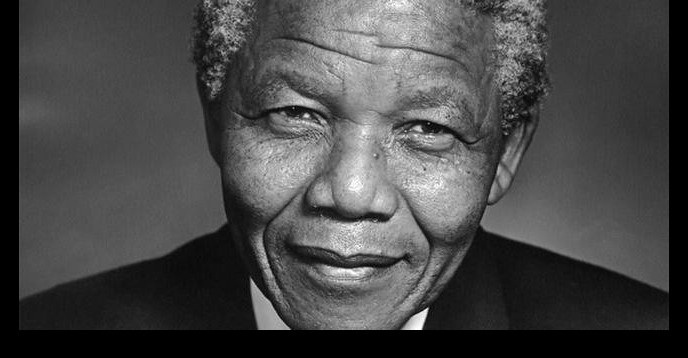

Nelson Mandela
Father of the Rainbow Nation

Nelson Mandela sharing his wisdom and encouraging everyone to fight
for social justice.
Nelson Rolihlahla Mandela was a South African anti-apartheid revolutionary, political leader and philanthropist who served as President of South Africa from 1994 to 1999. He was the country's first black head of state and the first elected in a fully representative democratic election.
Brief taken from: Wikipedia
For more detailed information on this great man check out NelsonMandela.org.
- 1918 - July 18 - Born Rolihlahla Mandela at Mvezo in the Transkei.
- 1925 - Attends primary school near Qunu where he received the name'Nelson' from a teacher.
- 1941 - Escapes an arranged marriage. Becomes a mine security officer. Starts writing articles at the law firm Witkin, Sidelsky & Eidelman.
- 1942 - Completes BA through the university of South Africa (UNISA). Begins to attend African National Congress (ANC) meetings informally.
- 1943 - Graduates with BA from Fort Hare. Enrolls for an LLB at Wits University.
- 1944 - Co-founds the ANC Youth League (ANCYL). Marries Evelyn Ntoko Mase with whom he went on to have four children.
- 1948 - Elected national secretary of the ANCYL.
- 1951 - Elected President of the ANCYL.
- 1952 - Defiance Campaign begins. Arrested and charged for violating the Suppression of Communism Act. Sentenced to nine months imprisonment with hard labour, suspsended for two years. Opens South Africa's first black law firm with Oliver Tambo.
- 1953 - Devises the M-plan for the ANC's future underground operations.
- 1955 - Watches as the Congress of the People at Kliptown adopts the Freedom Charter.
- 1960 - Sharpeville Massacre
- 1962 - Leaves the country for military training and to garner support for the ANC. Sentenced to five years in prison for incitement and leaving the country without a passport.
- 1963 - Sent to Robben Island. Appears in court at the Rivonia Trial. Sentenced to life.
- 1985 - Rejects South African President PW Botha's offer to release him if he renounces violence.
- 1988 - Diagnosed with tuberculosis
- 1990 - ANC is unbanned. Released from prison. Elected ANC deputy president.
- 1993 - Awarded Nobel Peace Prize with President FW de Klerk.
- 1994 - Votes for the first time in his life. Elected by Parliament as the first president of a democratic South Africa. Inaugurated as President of the Republic of South Africa.
- 1995 - Establishes the Nelson Mandela Children's Fund
- 2001 - Diagnosed with prostate cancer.
- 1999 - Steps down after one term as President. Establishes the Nelson Mandela Foundation.
- 2003 - Establishes the Mandela Rhodes Foundation.
- 2008 - Asks future generations to continue the fight for social justice. Turns 90 years old.
- 2013 - Passed away at home in Johannesburg on the 5th of December.